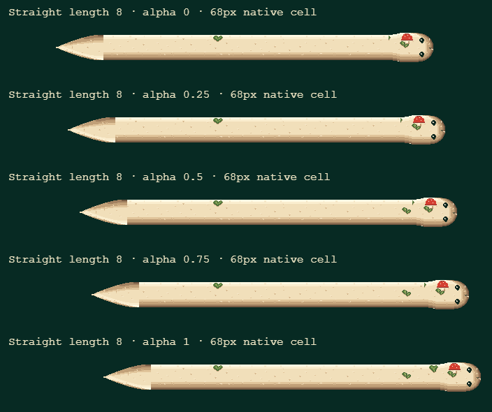
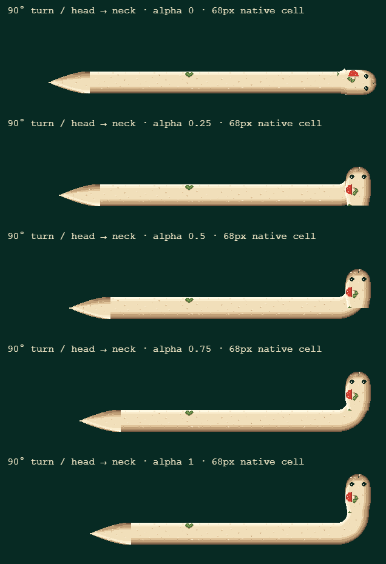
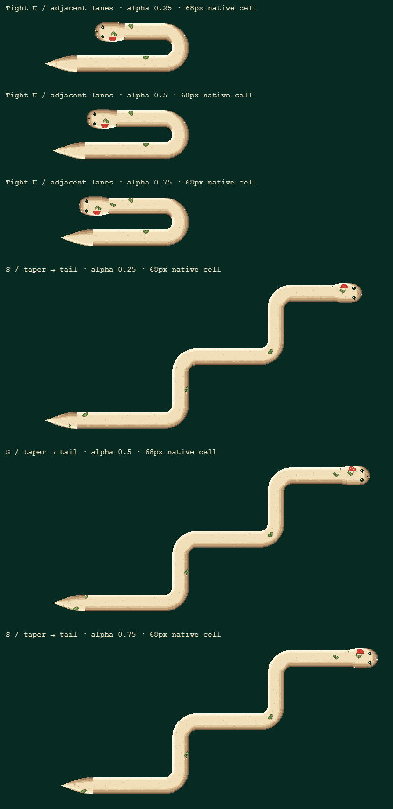
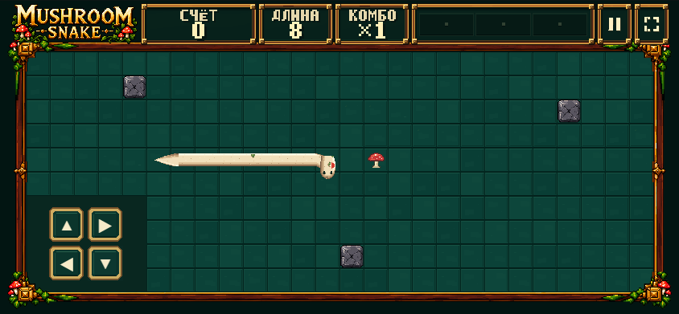

Играть / SMOOTH ON ↔ GRID SNAP. Нажмите B. Баланс, input queue, collision, scoring, food и portal FSM не изменены. GAME FEEL LOCK пока не установлен.
Первые три изображения — диагностические кадры настоящего sprite renderer на canonical path fixtures, не live-run screenshots. Alpha 0 → 1 соответствует одному логическому шагу. Cell = 68 px; изображения показаны 1:1, без shrink-to-fit. Последнее — реальный mobile Training 844×390.



